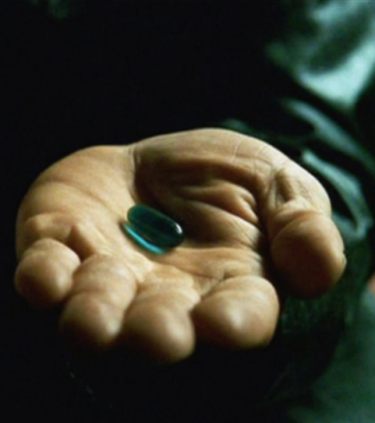

"You take the Bluepill, the story ends. You wake up in your bed and believe whatever you want to believe." -Morpheus
A Bluepill refers to a human that is not aware of the true nature of the Matrix. Bluepills typically have their bodies and minds remain semi-permanently connected to the power plant.
If the human chooses to continue their life within the Matrix, the virtual Bluepill presumably contains a reset command that sends the person back to a previous state to continue their existence within the Matrix, and completely forget anything about the conversation. That isn't necessarily to say that the decision is permanent as Redpills are always willing to help out anyone who is ready to leave.
A Bluepill's life within the Matrix depends entirely on the choices they make and can go about any societal facet of their civilization they desire. Most Bluepills live their entire lives in the Matrix oblivious to its true nature.
Since they are directly hardwired to the system, a Bluepill's RSI can be physically overridden by an Agent without a moment's notice.
This process is known as possession and poses a threat to any Redpill detected within the mainframe. Presumably, once an Agent has finished possessing someone, the Bluepill will most likely have no recollection of how they ended up in whatever current state the Agent had left them in.
If an Agent is killed, the Bluepill possessed also dies with them.
